周室衰微，禮崩樂壞。列國諸侯，競相爭霸。
遂有智者獻策：以麻將代刀兵，以牌局定勝負。
君擇一國，執十三張，吃碰槓胡，九連寶燈，國士無雙——
四方對坐，一場四局，以稀世牌型震懾列國。
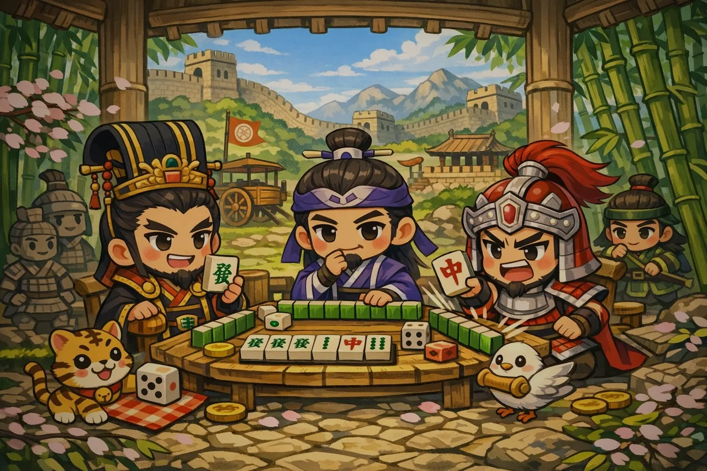
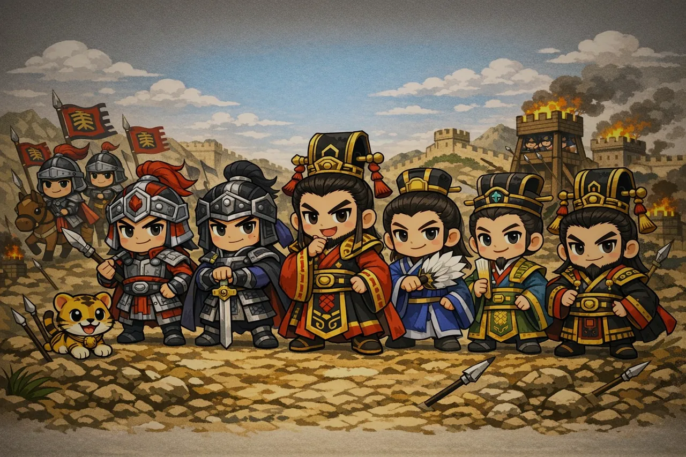
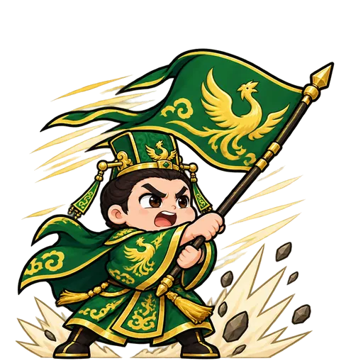
楚·雄兵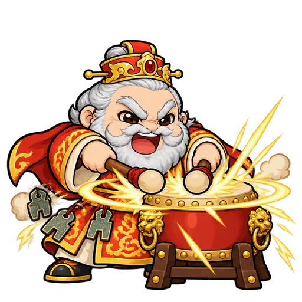
魏·鐵騎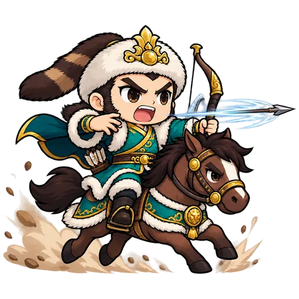
趙·騎射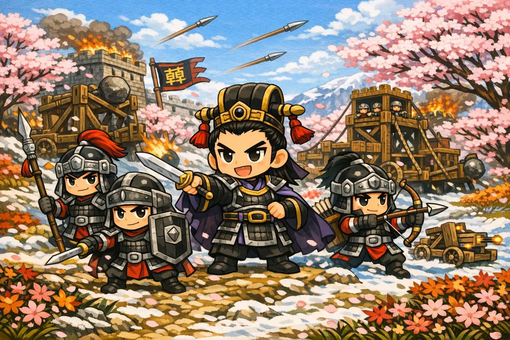
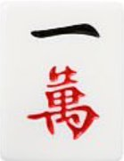
吃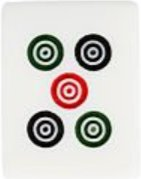
碰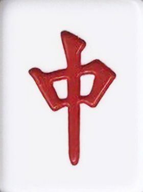
胡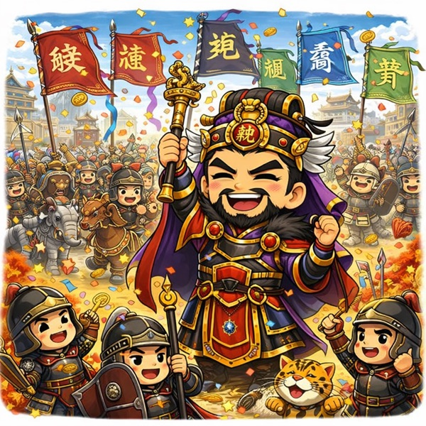
成長國家技能 改寫戰局
敗中取勢 於亂世統一天下
一張定勝負 一桌取天下
開戰按 Esc 會進入老闆模式（蓋上一張假 Excel）
S 發動，
鈕上的數字是還剩幾次。燕「奇謀」看自己接下來要摸的三張；
韓「精兵」與趙「騎射」各能把一張廢牌跟牌山換掉，趙的次數比較多；
魏「鐵騎」讓下一張棄牌別家不能吃碰槓（但仍可榮和），這個是整場的額度，
其餘三個每一局都會回滿。1–= 數字鍵可以直接打出Enter／空白鍵／手把 AB 鍵／手把 BA 鍵S 鍵（燕韓魏趙才有）
Esc 離開全螢幕，畫面會立刻蓋上一張假的 Excel 預算表，
音樂與代打同時停下。按任意鍵或點一下就回到牌局。
回到標題畫面？
這一場進行到一半的牌局不會保留。
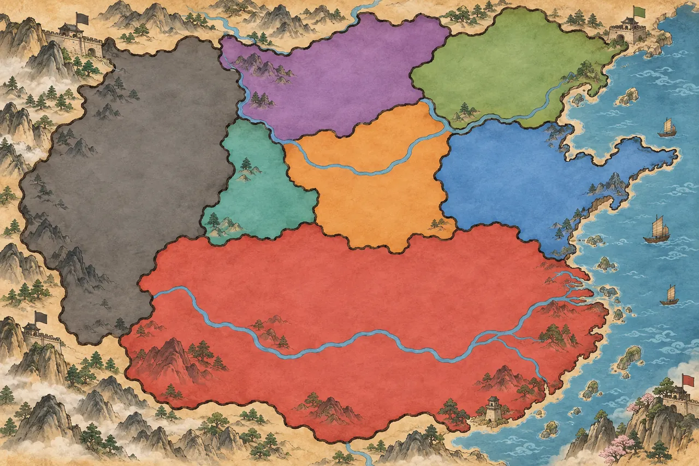